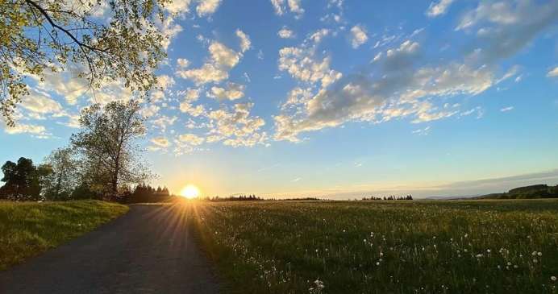

Движение вперёд
Люди путешествуют, чтобы расширить свой кругозор и они хотят посмотреть, что на другой стороне земли. Путешествуя, мы наслаждаемся различными местами, встречаем разных людей и пробуем различную еду.
Заодно
Люди могут путешествовать или для удовольствия, или по делам. Лучший способ выучить географию - это путешествовать, и лучший способ узнать и начать понимать людей - это встретить их в их собственных домах. Когда мы путешествуем, мы накапливаем свежие идеи и опыт, открываем новые вещи и получаем знания о мире.
